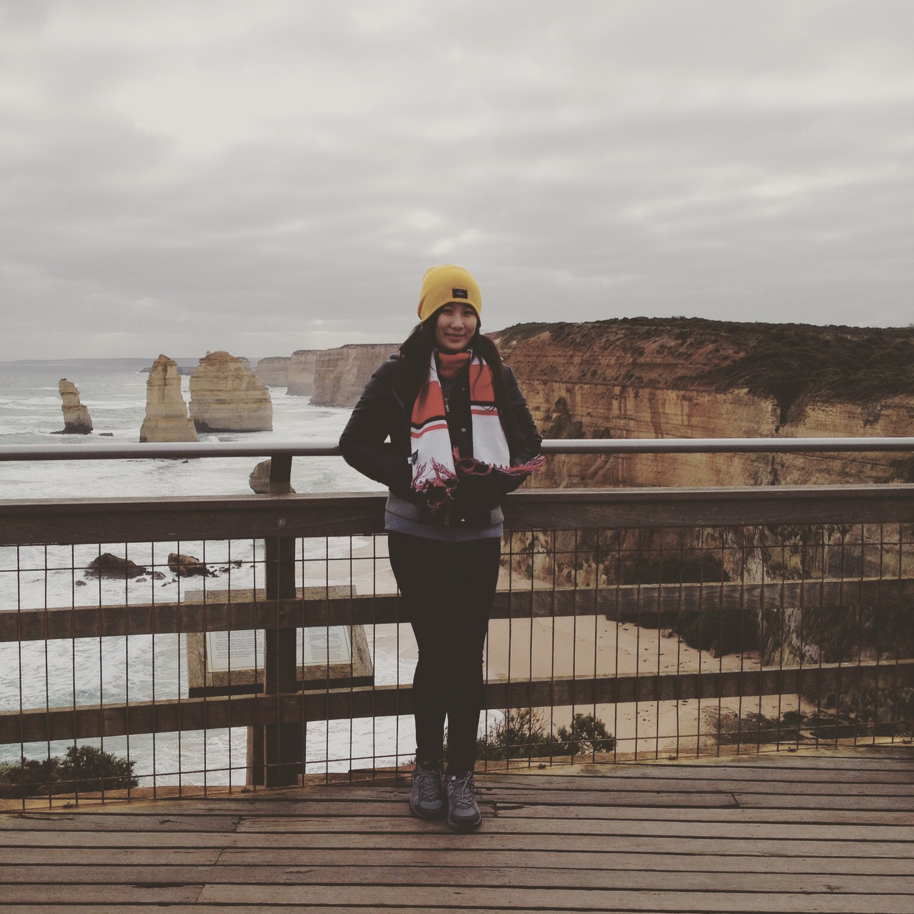
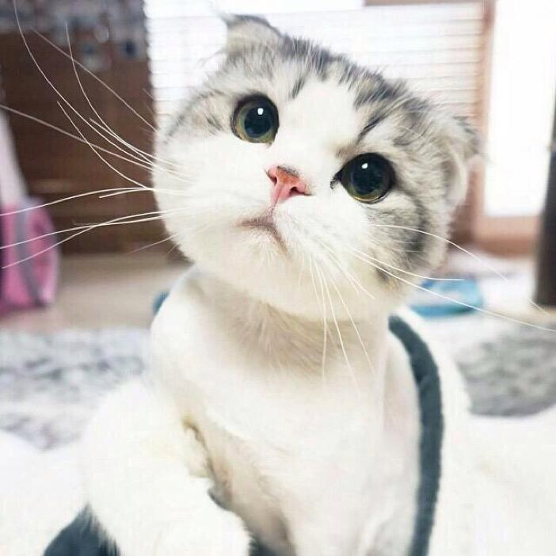

About Shirley
Hello, my name is Yingfei Li, a senior student at Michigan State University. I am an outgoing girl from Shanghai,China. Currently I am pursuing a Bachelor of Science degree in Computer Science. The expected graduating year is 2016. I'm interested in just about any form of development and love working on challenging problems. Hopefully, I could find a job in software designing field after I graduate!
****************************************************
I am a person who love travling around and experience different cultures. This is also one of the reason why I chose to study abroad. And also, I love animals so much, especially cats! Here is a image of my cousin's cat Luffy!
